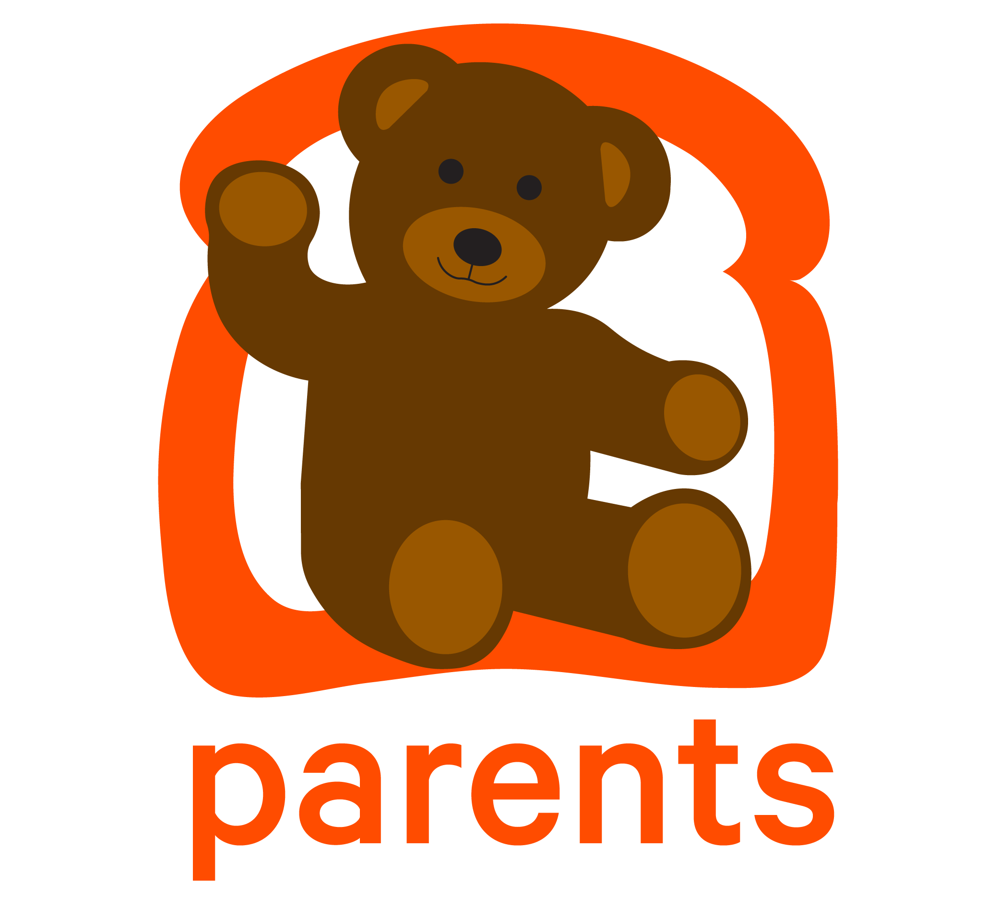
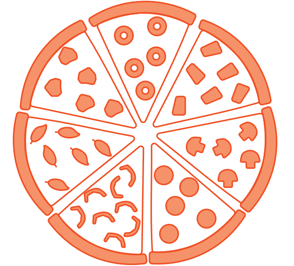

Graphic Design - Branding - Social Media
Toast Internship
During my four-month internship at Toast, I learned the ropes of internal branding as designer for the employer brand team at Toast.
Toast is a restaurant software company based in Boston, MA that is rapidly being adopted by restaurants throughout the US and beyond. From social media campaigns to DEI organizations, I was able to hone my graphic design and marketing skills to improve the company's employee-centered Instagram, @lifeattoast.

Toasty Takeover Instagram Campaign
In March, I kickstarted a "takeover" campaign for @lifeattoast centered around the employee experience. Each week, a new Toast employee posted content from throughout their day on the account's Instagram story, demonstrating their perspective and routine in their role.
The initial two takeovers, the first being hosted by myself, saw a follower growth of 75 users and over 2000 views, with around 70% of people watching the entire takeover.
To spread the word for this initiative, I presented to Toast's talent acquisition director and promoted the campaign internally to find individuals that were interested in being featured.
Social Media Marketing Assets


The First Toasty Takeover
As the campaign leader, my job was to provide an example of the cadence and content that goes into a takeover.
The takeover featured Q&As, collaborations with my coworkers, some wise words of wisdom from my internship, and of course plenty of gifs!
Branding for Internal Toast DEI Groups
While on co-op, I collaborated with the leaders of five of Toast's internal DEI organizations on branding projects.
For Toast Mamas and Parents, I created logos to help visually represent their mission and identity.
For three other organizations, I designed LinkedIn banners for members to employ on their personal profiles as a way of representing their identity professionally.
DEI Group Icons

Final Toast Mamas Logo

Alternate Toast Mamas Logo

Final Toast Parents Logo
LinkedIn DEI Group LinkedIn Profile Banners


Company Values Icons
At the start of my co-op, I worked on refreshed company value icons with Toast graphic designer, MC Nealon, and Employer Brand Manager, Natalie Audelo.
We centered the icons around food to pay homage to the company culture and the restaurant customer base.
In addition, I designed a LinkedIn banner for Toast employees to use on their personal profiles and an updated Glassdoor banner for the company page.
Final Company Values Icons
Always Be Hungry
Lead with Humility

One Team
LinkedIn Employee Profile Values Banner

Glassdoor Company Profile Values Banner
Photo Booth Props
At each new hire orientation, Toast has a photobooth for employees to document their first memories with the company. These props showcase the Toast brand in a playful manner to add flare to the snapshots.